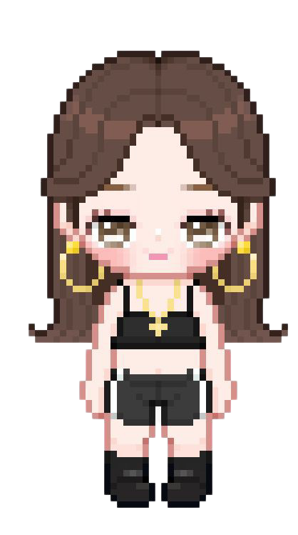

✨ ¡Holaaaa Amorr! ✨


¡Feliz primer mes, mi vidaa! Pero... ¡oh no! El temible Dragón Ignis me ha secuestrado. Si me conoces lo suficiente, ¡responde bien y rescátame!

🐉 Dragón Ignis:
¿Qué día de la semana fue cuando se conocieron por primera vez?
🐉 Dragón Ignis:
¿Cuál es el detalle que siempre te recuerda a Yeli?
🐉 Dragón Ignis:
¿Cuál es la comida favorita de Yeli que comería todos los días?
🐉 Dragón Ignis:
Si Yeli se queda toda la noche viendo una serie, ¿cuál sería?
🐉 Dragón Ignis:
¿Cuál es la película de terror favorita de Yeli con la que más se asusta o disfruta?
🐉 Dragón Ignis:
¿Cuál es el anime favorito de Yeli?
🐉 Dragón Ignis:
¿Cuál es el cantante favorito versión español de Yeli que podría escuchar toda su vida y no se cansaría?
🐉 Dragón Ignis:
¿Cuál es el cantante favorito versión inglés de Yeli que podría escuchar toda su vida y no se cansaría?
🐉 Dragón Ignis:
¿Cuál es la cantante favorita versión español de Yeli que podría escuchar toda su vida y no se cansaría?
🐉 Dragón Ignis:
¿Cuál es la cantante favorita versión inglés de Yeli que podría escuchar toda su vida y no se cansaría?
🐉 Dragón Ignis:
¿Cuál es el banda favorita versión español de Yeli que podría escuchar toda su vida y no se cansaría?
🐉 Dragón Ignis:
¿Cuál es la banda favorita versión inglés de Yeli que podría escuchar toda su vida y no se cansaría?
🐉 Dragón Ignis:
¿A qué pais quiere viajar Yeli?
🐉 Dragón Ignis:
¿Cúal es el animal favorito de Yeli?
🐉 Dragón Ignis:
¿Cúal es la bebida favorita de Yeli?
🐉 Dragón Ignis:
¿Cúal es el color favorito de Yeli?
🐉 Dragón Ignis:
¿Cúal es la fruta favorita de Yeli?
🐉 Dragón Ignis:
¿Cuál es el mayor miedo o fobia de Yeli a la que le huye por completo?
🐉 Dragón Ignis: ¡¡ÚLTIMA PREGUNTA - EL FINAL!!
¡NO PUEDE SER! Has respondido todo bien... ¡Esta es mi última oportunidad para destruirte! Si fallas aquí, Yeli será mía para siempre:
¿Qué es lo que más enamora a Yeli de Eudi en su momento favorito juntas?
❌ ¡Casi te ataca el dragón! ❌


¡Oh no! ¡El dragón me ha capturado y me lleva a su castillo! ¡Resuélvelo bien la próxima para salvarme
🎉 ¡ME RESCATASTE! 🎉

¡Eres la mejor novia del mundo! Demostraste que me conoces a la perfección. ¡Feliz 1° Mes de novias, mi vidita! Te amo inmensamente desde aquel 18 de febrero. ❤️